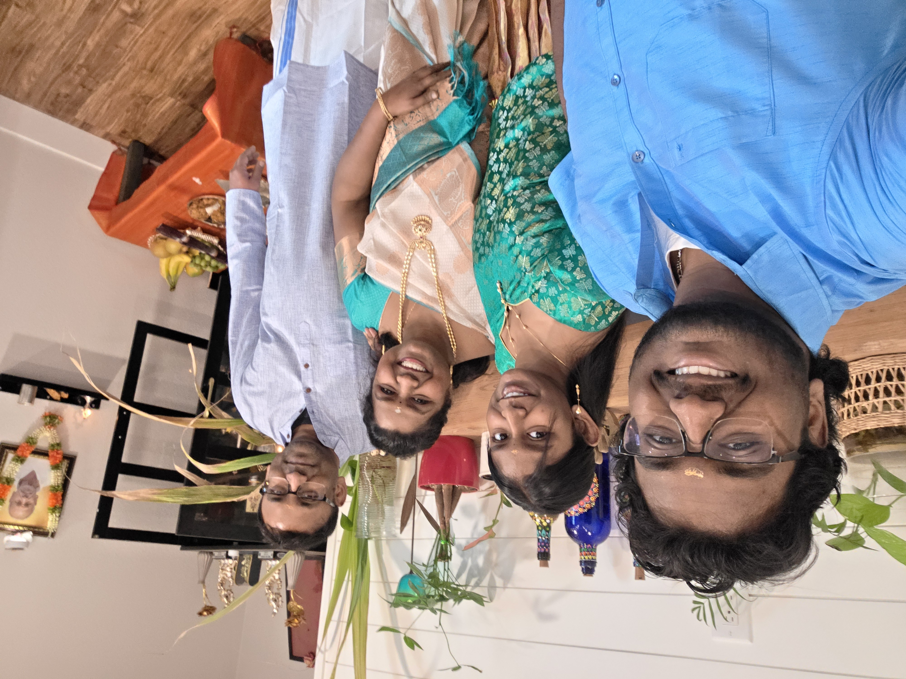
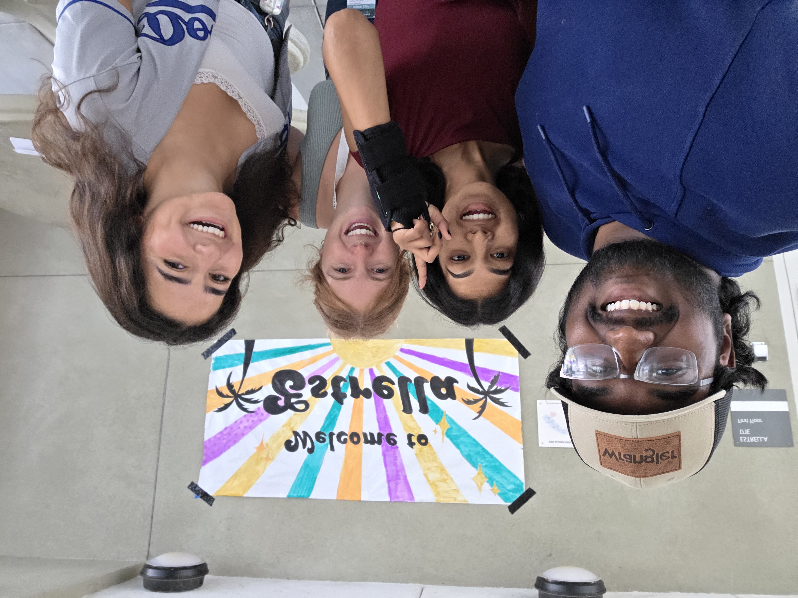

Aug 2025 to Present
Cal Poly SLO
Resident Advisor
I’m one of the first people 50+ residents come to when they need help, have a conflict, or just need someone to listen. It’s made me calmer under pressure and better at reading a room.
Open to 2027 internships
I’m a third-year Computer Engineering student at Cal Poly SLO. I split my time between Livermore and San Luis Obispo, and I’m happy to relocate for the right opportunity.
01 / Selected Work
A mix of hardware, circuits, and software. Every project here taught me something the lecture slides didn’t.
02 / Capabilities
I’m happiest when I can move between code, schematics, waveforms, and the bench instead of treating them as separate worlds.
I enjoy turning an idea into RTL, then living in the waveform viewer until the timing and behavior finally line up.
Sensors, analog front ends, lab instruments, and the patient process of finding the one thing that’s actually wrong.
I care about clear structure, useful abstractions, and code I can still understand when I come back to it a month later.
03 / About
I’m Hitesh. I got into computer engineering because I wanted to understand both sides of the board: what the hardware is doing and how software brings it to life.
At Cal Poly that’s taken me through digital design, analog electronics, computer architecture, and systems programming. I’m also minoring in Ethics, Public Policy, Science, and Technology, because I think engineers should ask who a technology helps, not just whether we can build it.
Outside of class I like to travel, chase experiences that push me a little out of my depth, and generally say yes to a good challenge. It keeps the engineering fun.


Aug 2025 to Present
Cal Poly SLO
I’m one of the first people 50+ residents come to when they need help, have a conflict, or just need someone to listen. It’s made me calmer under pressure and better at reading a room.
Aug 2022 to Present
Slick and Quick Car Care
I started detailing cars in high school and turned it into a small repeat-client business. It taught me a lot about reliability, pricing my time, and doing the job right the first time.
2024 to Present
Campus Involvement
I spend time around other people who like building things through Cal Poly Racing and the Computer Engineering Society. Good ideas tend to show up when you’re around curious people.
04 / On AI
I use it a lot, but I treat it like a sharp tool, not autopilot. Here’s roughly how I think about it.
AI speeds up the parts of a problem I already understand. It doesn’t replace understanding them. When something ships, I’m the one on the hook for it, so I keep my hands on the fundamentals.
ChatGPT and Claude for thinking out loud, GitHub Copilot for inline suggestions, and Cursor when I’m moving fast through a codebase. Different tools for different moments.
Debugging, learning a new concept quickly, knocking out boilerplate, and rubber-ducking. Talking through my reasoning usually surfaces the wrong assumption faster than staring at the screen.
Embedded and low-level work. That’s where a confident-sounding answer is most likely to be subtly wrong, so I lean harder on my own testing, datasheets, and hardware-level reasoning.
05 / Contact
Whether it’s an internship, a project, or just a good hardware conversation, I’d like to hear from you.